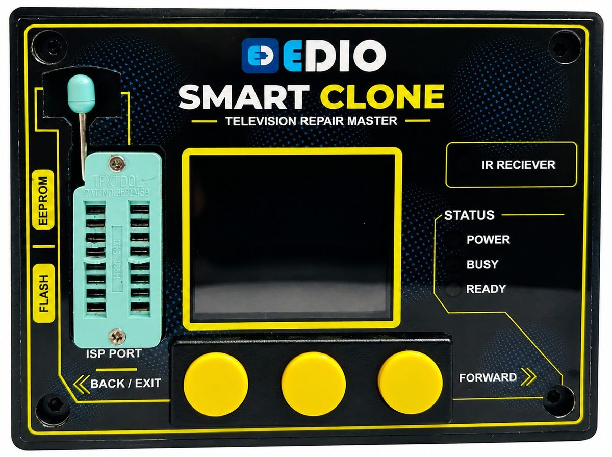
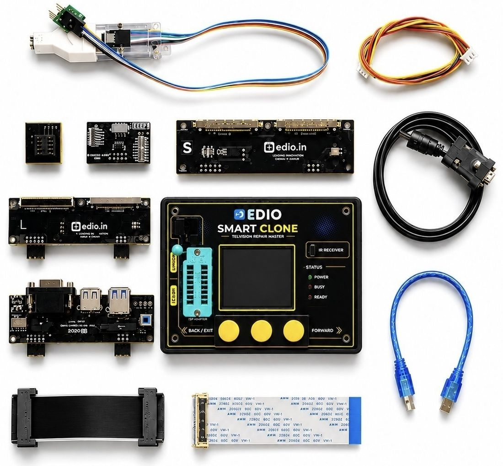

01
Fragmented repair knowledge
What works is held in individual memory, private chats and scattered forums rather than in a shared, searchable form.
EDIODE ELECTRONICS PRIVATE LIMITED / INDIA
EDIO builds intelligent hardware, repair technologies and data systems that help technicians diagnose, repair and recover electronic devices — extending product life and reducing electronic waste.

Every year, millions of electronic devices become waste because they are difficult, expensive or inefficient to repair.
EDIO is building the technology infrastructure that helps the people who repair those devices make better decisions, recover more devices and extend electronic product lifecycles.
How EDIO startedA device reaches waste long before it reaches the end of its useful life — usually at the point where diagnosis becomes too hard.
Where the chain breaks. When diagnosis stalls, the device does not wait. It is written off, cannibalised or discarded — even when the fault is small, local and fixable. EDIO works on that third stage.
What works is held in individual memory, private chats and scattered forums rather than in a shared, searchable form.
Denser boards, more integration and more firmware dependency raise the skill floor for every repair.
Many benches lack the instruments needed to isolate a fault quickly and confidently.
A hardware-sound board can still be dead because its memory contents are corrupted or missing.
Symptoms, measurements and outcomes are recorded inconsistently, so they cannot be compared or learned from.
Professional-grade programming and recovery equipment is scarce and rarely designed around repair workflows.
Every unresolved diagnosis adds to a waste stream that carries materials and embodied energy with it.
Figures will appear here only when EDIO can attribute them to a named source and year.
This page currently cites no external statistics. When verified figures are published, each entry will carry a publisher, year, methodology note and link, and will be listed here.
| Publisher | — |
|---|---|
| Dataset / report | — |
| Year | — |
| Link | — |
Four layers, built in order. Each one only works because the layer beneath it exists.
Select a layer to see what sits inside it. Data moves upward: hardware produces evidence, evidence becomes structure, structure becomes assistance.
Flagship hardware
A new generation of intelligent electronics repair technology — an advanced standalone motherboard programming, diagnostic and recovery tool designed for electronics repair professionals.
SmartClone runs without a host computer. It reads and writes supported memory, talks to supported systems over UART, infrared and I²C, and gives the technician a way back into a board that will not start.
Full workflows on the device, without a laptop on the bench.
Direct communication with supported electronic systems for diagnostic and programming workflows.
Wireless communication interface for supported repair workflows.
Read, write, edit, store and clone supported memory data.
Bus-level access to supported devices for identification and memory work.
Restore supported boards after firmware or memory corruption.
Inspect and modify memory contents byte by byte, on the device.
Built to work across supported boards from multiple manufacturers.
Support depends on the board, memory device and interface. EDIO does not claim universal compatibility.
The same problem — symptom to diagnosis — repeats across every category of electronics. Solve it once, structure it well, and it travels.
Categories shown are the direction of EDIO's technology roadmap, not current product coverage.
From one repair bench to a global repair intelligence layer.
Shipped work and planned work, kept visually separate. Hatched columns are direction, not availability.
Each entry below is a field EDIO maintains. Empty fields stay empty until there is something verifiable to put in them.
Every value carries a unit, year, source, methodology and verification status. Nothing on this site is estimated in a place that looks measured.
Repair more. Waste less. Build smarter.
Technology should not only create new products. It should also help us repair, recover and extend the life of the products we already have.
Technology
EDIO works at the level where repair actually happens: the signal on the pin, the byte in the memory, the measurement on the board, and the record that comes out of it.
None of these four parts is interesting on its own. A programmer without data is a tool. Data without hardware is a spreadsheet. The value is in the loop between them.
SmartClone is an embedded product: a processor, memory, level-shifted interfaces and a display, running firmware written for one job — getting a technician from a dead board to a working one. Timing, tolerance and electrical safety are design constraints, not features.
Asynchronous serial is still the most direct way into a supported system. There is no clock line: both ends agree on a bit rate, and the frame carries its own timing.
Two lines, many devices, each with an address. For a technician, addressing is diagnosis: if a memory device acknowledges, the bus and the supply behind it are alive, and the fault is somewhere else.
A board can be electrically sound and still dead, because the bytes it starts from are wrong. Reading memory before touching anything, keeping that read, and writing back a known-good image is the core recovery workflow SmartClone is built around.
Infrared remains the control path on a large share of consumer electronics. Carrier frequency, burst timing and protocol encoding make it a usable diagnostic channel where a wired header is unavailable or unsafe.
A diagnosis is a sequence of decisions under uncertainty. EDIO's aim is to shorten that sequence — fewer measurements to reach the same conclusion, with the reasoning recorded.
Models are only as good as the records behind them. EDIO's work here starts with data quality, not model size — and is in development, not in production.
In developmentA schema for repair cases, storage that keeps units and context intact, and tooling that makes recording a case faster than not recording it.
Being builtThe tool that takes the measurement is also the tool that can capture it. That is the shortest path from a bench action to a structured record.
In SmartCloneYears of exposure to how repairs actually fail and succeed.
A standalone tool that does programming, diagnosis and recovery.
A common structure for repair cases and their outcomes.
Assistance that gets a technician from symptom to diagnosis faster.
SMARTCLONE / SC—1
An advanced standalone motherboard programming, diagnostic and recovery tool designed for electronics repair professionals.

SmartClone was designed from the bench outward. It runs standalone, so it works in a service centre with no spare laptop, in a field visit, or on a crowded workshop table.
It covers the operations that decide whether a board is recoverable: talking to the system, reading and keeping its memory, editing contents where needed, writing back, and verifying the result.
Bring supported boards back after firmware or memory corruption.
Read, write, edit, store and clone supported memory data.
Replace or restore software contents as part of a repair workflow.
Confirm what responds on the board before replacing anything.
Work at component and bus level rather than swapping assemblies.
The category SmartClone was first built and tested against.
Eight stages, in order. Step through them to see what the tool is doing at each point.
Rows marked pending are not yet published. They are left blank rather than estimated.
| Operating mode | Standalone — no host computer required |
|---|---|
| Serial interface | UART (TX, RX, GND, VCC header) |
| Bus interface | I²C (SDA, SCL) |
| Wireless interface | Infrared |
| ADB support | Where applicable to the target |
| Host connection | USB |
| Display | Integrated TFT |
| Socket / clip | ZIF and clip interface, configuration dependent |
| Memory operations | Read, write, edit, store, clone — supported devices |
|---|---|
| On-device editing | HEX editor |
| Recovery workflow | Backup, edit, write, verify |
| Firmware updates | Field-updatable |
| Supply voltage | Pending publication |
| Dimensions | Pending publication |
| Mass | Pending publication |
| Supplied with | Adapters, interface boards and cables — varies by configuration |
Two columns, deliberately separated: what SmartClone does today, and what is planned. Nothing is promised in the wrong column.
These items are roadmap. They are not part of what ships today.
Quick-start guide, interface reference, workflow notes and firmware release notes.
Publishing soonConfirmed devices and boards, published case by case rather than claimed in bulk.
Publishing soonRepair intelligence
A repair that is completed and forgotten helps one device. A repair that is recorded well can help every technician who meets the same symptom.
EDIO is structuring real-world repair knowledge into machine-readable intelligence. Each stage below is a field in a repair case — captured at the bench, in the order the work happens.
Scroll the pipeline sideways on narrow screens. Feedback loops back to diagnosis — a case is only closed once the outcome is known.
A million loose notes cannot be compared. A thousand cases with the same fields, the same units and a recorded outcome can be. EDIO's first job in data is not collection — it is agreeing what a repair case is.
Repair data comes from people's work. How it is contributed, what it contains and who benefits are design questions EDIO treats as seriously as the schema itself.
REPAIR CASE — ILLUSTRATIVE SHAPE
case_id : — device_class : television board_ref : — symptom : no display, backlight on measurement : rail_3v3 = 3.28 V measurement : bus_i2c = responds diagnosis : memory contents invalid component : U7 (EEPROM) action : read, edit, write, verify outcome : recovered feedback : stable after 72 h
Illustrative field shape only. Not a data sample, and not drawn from a real case.
SmartClone in use at the bench: programming, diagnosis and recovery, standalone.
ShippingA common structure for repair cases, and tooling that makes recording one part of the job rather than extra work.
In developmentAssistance that ranks probable causes from a symptom and a few measurements, learning from outcomes.
VisionAn AI repair agent that helps technicians move from symptom to diagnosis faster.
This is EDIO's long-term technology goal. It is not available, not in beta, and not sold. It is stated here as direction so the rest of the work makes sense.
EDIO's contribution to repairability is practical: better tools, better information, better trained people.
Repair is only a real option when the means to attempt it exist at the bench where the device arrives.
Technical information that is findable and reusable, instead of rediscovered on every board.
Instruments designed around repair decisions rather than adapted from manufacturing.
Capability that stays with the person, and raises what they can take on next.
More service years from devices that already exist, before replacement is considered.
Repair, reuse and refurbishment as the first options, not the fallback.
EDIO takes no position here on specific legislation or legal disputes. This section describes engineering and access work, not policy claims.
Sustainability
When an electronic device is repaired instead of discarded, the useful life of the product can be extended and the need for premature replacement can potentially be reduced.
Enter your own numbers. The model shows its working, and every assumption can be changed.
MODELLED OUTPUT
Modelled estimate. Not an independently verified impact figure, not audited, and not suitable for compliance reporting without your own verified inputs.
| Model type | Deterministic, linear. No uncertainty range applied. |
|---|---|
| Counterfactual | User-supplied share of repairs that would otherwise have ended in disposal. |
| Material kept in use | Whole-device mass. No material composition breakdown. |
| Life extension | User-supplied and assumed uniform across devices. |
| Emissions | Shown only if the user supplies an attributable factor. EDIO ships no default factor. |
| Excluded | Transport, spare-part manufacture, energy used in repair, rebound effects, failure after repair. |
| Verification status | Unverified model. Intended for indicative planning only. |
Defaults are placeholders for demonstration and can be replaced by an administrator. Sources will be listed here once verified factors are adopted.
EDIO's work aligns with the objectives of four UN Sustainable Development Goals. Alignment is not endorsement: EDIO has no UN partnership, affiliation or certification.
Creating technology-enabled opportunities for skilled repair professionals.
Building advanced repair infrastructure and electronics technology.
Supporting longer product lifecycles and circular use of electronics.
Repair and product-life extension can contribute to reducing resource demand associated with premature replacement.
Goal titles are as published by the United Nations. No statistics from external publishers are cited on this page yet; when they are, each will appear here with publisher, year and link.
EDIO's sustainability view includes people, not only waste. Every advanced repair tool can increase the capability of the person using it.
POTENTIAL IMPACT MODEL
Technicians equipped × repair capability × devices serviced
A framing, not a measurement. EDIO will publish figures against this model only when technicians, capability and volumes can be verified.
Published only where EDIO holds evidence: named deployments, counted technicians, dated events. Until then, this space stays empty on purpose.
Modelled or projected outcomes, always labelled, always with assumptions attached, never counted alongside verified figures.
Global repair ecosystem
The same faults appear in Chennai, Lagos, São Paulo and Warsaw. So do the same gaps in tooling and information.
Building a connected repair ecosystem across markets.
Markers appear on this map only for locations EDIO can confirm. There are no illustrative or sample locations: an empty region means no confirmed presence yet, not a gap in the visualisation.
Each confirmed location records country, category, count, primary application and year joined.
The bench where most repairs actually happen.
Multi-site operations that need consistent workflows.
Volume recovery, where diagnosis speed decides margin.
Partners on repairability, parts and material recovery.
EDIO Repair Intelligence Index
The index will report on repair cases, faults, diagnostic patterns and outcomes as EDIO's data infrastructure comes online. Panels below show the shape of that reporting.
Ranked fault categories by device class, with confidence based on case count.
Sequences of measurements that most often lead to a correct diagnosis.
Median time from intake to verified recovery, by device class.
Awaiting dataFault categories rising fastest quarter on quarter.
Awaiting dataWhere cases are recorded, and how patterns differ by market.
Awaiting data| Unit of record | One completed repair case, submitted with consent |
|---|---|
| Minimum reporting threshold | Categories are published only above a stated case count |
| Aggregation | Reported by device class and region, never by identifiable technician |
| Update cadence | To be defined at launch |
| Current status | No data published. Panels above are structural placeholders. |
EDIO Insights
Technical articles, case studies and thinking on repair, data and the circular electronics economy.
About EDIO
EDIO did not begin with a market study. It began with boards on a bench, and with technicians who could see exactly what was wrong with a device but not always get to it.
Spending time in that environment makes one thing obvious very quickly: the hard part is rarely the soldering. The hard part is knowing what to trust. Which measurement matters. Whether the board is dead or just holding the wrong bytes. Whether an hour of investigation will end in a repair or in a written-off unit.
That is a technology problem, and it had not been treated like one. So we started building tools for it — starting with the operations that most often decide whether a board can be recovered, and putting them in something that works standalone, in the real conditions of a workshop.
SmartClone came out of that. Then a second realisation: every repair that tool helps complete produces knowledge, and almost all of it evaporates. Structuring that knowledge is the longer, harder and more valuable project, and it is where EDIO is heading.
Founder photograph — to be supplied. Authentic bench photography preferred over stock imagery.
REGISTERED ENTITY
| Legal name | Ediode Electronics Private Limited |
|---|---|
| Brand | EDIO |
| Country | India |
| Registered office | To be published |
We publish what the hardware does, and mark clearly what it does not do yet.
Every design decision is judged at a working bench, not in a slide.
Verified facts and modelled projections never share a column on this site.
Contact and partnerships
Tell us which of these you are, and the form will ask only what is relevant.
DIRECT
| General | — |
|---|---|
| Partnerships | — |
| Support | — |
Contact addresses are placeholders until EDIO confirms them. Set them in the site content configuration.